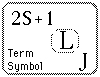

|
The heirarchy of labels for the electrons of
multi-electron atoms is configuration, term,
level, and state.
The term uses the multiplicity 2S + 1, total
orbital angular momentum L, and total angular
momentum J. It assumes that all the spins combine
to produce S, all the orbital angular momenta couple
to produce L, and then the spin and orbital terms
combine to produce a total angular momentum J. The angular momentum symbol follows the spectroscopic notation scheme.
Different terms will in general have different
energies, and the order of those energies is usually
that given by Hund's Rules, although there are
exceptions. The different terms for a given configuration
are obtained by forming the different combinations of angular
momenta for the electrons outside closed shells, making
sure the Pauli Exclusion Principle is obeyed.
|
 |